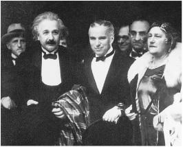
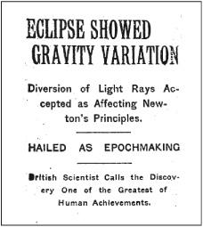
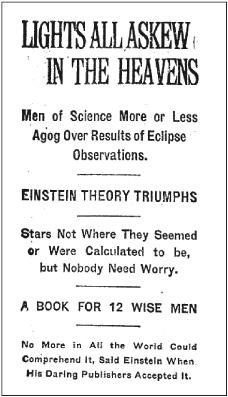

With Charlie Chaplin and Elsa at the Hollywood premiere of City Lights, January 1931
与查理·卓别林和爱尔莎在好莱坞，《城市之光》首演，1931年1月
Einstein’s theory of relativity burst into the consciousness of a world that was weary of war and yearning for a triumph of human transcendence. Almost a year to the day after the end of the brutal fighting, here was an announcement that the theory of a German Jew had been proven correct by an English Quaker. “Scientists belonging to two warring nations had collaborated again!” exulted the physicist Leopold Infeld. “It seemed the beginning of a new era.”1
对一个厌倦了战争、渴望美好人性的世界来说，爱因斯坦的相对论不啻为一支强心剂。在那场残酷的战争结束一年后，有报道说，一个德国犹太人的理论被一个英国贵格派教徒所证实。“分属两个敌国的科学家再次合作！”物理学家英菲尔德欢呼道，“这似乎标志着一个新时代的开始。”
The Times of London carried stories on November 7 about the defeated Germans being summoned to Paris to face treaty demands from the British and French. But it also carried the following triple-decked headline:
11月7日那天，伦敦的《泰晤士报》报道了战败的德军被召集到巴黎与英法两国谈判，同时它也刊登了以下三行大标题：
“The scientific concept of the fabric of the Universe must be changed,” the paper proclaimed. Einstein’s newly confirmed theory will “require a new philosophy of the universe, a philosophy that will sweep away nearly all that has hitherto been accepted.”2
“关于宇宙结构的科学概念必须改变。”这篇文章宣称。爱因斯坦新近创立的理论“要求建立一种新的宇宙哲学，它将几乎彻底推翻目前所接受的一切”。
The New York Times caught up with the story two days later.3 Not having a science correspondent in London, the paper assigned the story to its golf expert, Henry Crouch, who at first decided to skip the Royal Society announcement, then changed his mind, but then couldn’t get in. So he telephoned Eddington to get a summary and, somewhat baffled, asked him to repeat it in simpler words.4
两天后，《纽约时报》也急起直追做了报道。 由于《纽约时报》在伦敦没有科学记者，所以报道任务被分派给高尔夫行家亨利·克劳奇。他最初打算绕过皇家学会的公报，随后又改变了想法，但却读不懂这份公报。于是他打电话给爱丁顿索取一份摘要，并且不无尴尬地希望对方用较为易懂的话复述一下。
Perhaps due to Eddington’s enthusiasm in the retelling, or due to Crouch’s enthusiasm in the reporting, Eddington’s appraisal of Einstein’s theory was enhanced to read “one of the greatest—perhaps the greatest—of achievements in the history of human thought.”5 But given the frenzy about to ensue, the headline was rather restrained:
不知是因为爱丁顿复述的热情还是克劳奇报道的热情，爱丁顿称爱因斯坦的理论为“人类思想史上最伟大的成就之一，甚至是最伟大的成就”。 但是为了不至引发疯狂，所用的大标题还是相当谨慎的。

The following day, the New York Times apparently decided that it had been too restrained. So it followed up with an even more excited story, its six-deck headline a classic from the days when newspapers knew how to write classic headlines:
第二天，《纽约时报》显然觉得它过于谨慎了，于是紧接着发了一篇更为振奋人心的报道，其六排大标题在当时实属罕见。

For days the New York Times, with a bygone touch of merry populism, played up the complexity of the theory as an affront to common sense. “This news is distinctly shocking, and apprehensions for confidence even in the multiplication table will arise,” it editorialized on November 11. The idea that “space has limits” was most assuredly silly, the paper decided. “It just doesn’t, by definition, and that’s the end of it—for common folk, however it may be for higher mathematicians.” It returned to the theme five days later: “Scientists who proclaim that space comes to an end somewhere are under some obligation to tell us what lies beyond it.”
一连数天，《纽约时报》带着往昔的平民主义笔调，对这一复杂理论大肆渲染，连篇累牍进行报道，视之为对常识的冒犯。“这一新闻着实令人震惊，它甚至会动摇我们对乘法表的信任。”《纽约时报》11月11日的社论说。这篇文章断定：“空间有界限”的想法必定愚不可及。“空间依据定义就不可能有界限。对普通民众来说，事情已到此为止，无论那些高深的数学家们对此有何看法。”五天后，它又回到了这一主题：“宣称空间有尽头的科学家们有义务告诉我们空间之外是什么。”
Finally, a week after its first story, the paper decided that some words of calm, more amused than bemused, might be useful. “British scientists seem to have been seized with something like an intellectual panic when they heard of photographic verification of the Einstein theory,” the paper pointed out, “but they are slowly recovering as they realize that the sun still rises—apparently—in the east and will continue to do so for some time to come.”6
一周之后，《纽约时报》觉得此时不妨说一些安慰性的俏皮话。“在听说爱因斯坦的理论得到照片证实后，英国科学家们似乎产生了理性恐慌，”《纽约时报》报道说，“直至他们意识到太阳（看上去）依旧从东方升起，并将一直这样持续下去时，他们才慢慢恢复了平静。”
An intrepid correspondent for the newspaper in Berlin was able to get an interview with Einstein in his apartment on December 2, and in the process launched one of the apocryphal tales about relativity. After describing Einstein’s top-floor study, the reporter asserted, “It was from this lofty library that he observed years ago a man dropping from a neighboring roof—luckily on a pile of soft rubbish—and escaping almost without injury. The man told Dr. Einstein that in falling he experienced no sensation commonly considered as the effect of gravity.” That was how, the article said, Einstein developed a “sublimation or supplement” of Newton’s law of gravity. As one of the stacked headlines of the article put it, “Inspired as Newton Was, But by the Fall of a Man from a Roof Instead of the Fall of an Apple.”7
12月2日，这家报纸驻柏林的一个无畏的通讯记者在爱因斯坦的寓所采访了他，并且炮制了一篇关于相对论的报道。在描述了顶楼的书房之后，这位记者断言：“几年前，他正是从这间书斋看到一个人从附近的房顶跌落下来。幸好这个人落在一堆软垃圾上而无大碍。这个人对爱因斯坦博士说，他在下落过程中没有感到通常的引力效应。”这篇文章说，爱因斯坦就是这样对牛顿万有引力定律进行了“升华或补充”。正如它的一个美妙标题所说：“虽然像牛顿一样受到启发，但灵感来自一个人从房顶落下，而不是苹果的落下。”
This was, in fact, as the newspaper would say, “a pile of soft rubbish.” Einstein had done his thought experiment while working in the Bern patent office in 1907, not in Berlin, and it had not involved a person actually falling. “The newspaper drivel about me is pathetic,” he wrote Zangger when the article came out. But he understood, and accepted, how journalism worked. “This kind of exaggeration meets a certain need among the public.”8
事实上，这篇文章才是“一堆软垃圾”。爱因斯坦1907年在伯尔尼专利局工作时就曾做过这个思想实验，而不是在柏林，而且它并不涉及某个人的实际坠落。“这家报纸关于我胡言乱语了一通，这真是可悲。”当文章发表时他给仓格尔写信说。不过他清楚新闻业的运作。“这种夸张迎合了公众的某种需要。”
There was, indeed, an astonishing public craving to understand relativity. Why? The theory seemed somewhat baffling, yes, but also very enticing in its mystery. Warped space? The bending of light rays? Time and space not absolute? The theory had the wondrous mix of Huh? and Wow! that can capture the public imagination.
其实，公众非常渴望了解相对论。为什么呢？这一理论的确有些不可思议，充满神秘感。弯曲的空间？光线的弯曲？时间和空间并非绝对？在把握公众想象力方面，相对论的能力可谓相当了得。
This was lampooned in a Rea Irvin cartoon in the New Yorker, which showed a baffled janitor, fur-clad matron, doorman, kids, and others scratching their heads with wild surmise as they wandered down the street. The caption was a quote from Einstein: “People slowly accustomed themselves to the idea that the physical states of space itself were the final physical reality.” As Einstein put it to Grossmann, “Now every coachman and waiter argues about whether or not relativity theory is correct.”9
《纽约客》杂志刊登了一幅瑞·欧文的调侃漫画。画中有困惑的大楼管理员、身穿毛皮大衣的主妇、看门人、孩子以及在街上挠头的行人。说明文字是爱因斯坦的一句话：“人们慢慢地习惯于这样一种观念：空间本身的物理状态是最终的物理实在。”正如爱因斯坦对格罗斯曼所说：“现在每一个车夫和店员都在争论相对论是否正确。”
Einstein’s friends found themselves besieged whenever they lectured on it. Leopold Infeld, who later worked with Einstein, was then a young schoolteacher in a small Polish town. “At the time, I did what hundreds of others did all over the world,” he recalled. “I gave a public lecture on the theory of relativity, and the crowd that lined up on a cold winter night was so great that it could not be accommodated in the largest hall in town.”10
每当举办相对论的讲座时，爱因斯坦的朋友们都很苦恼。后来与爱因斯坦共事的利奥波德·英菲尔德那时正在波兰的一个小城市当老师。“当时，我做的事情与全世界上百人做的事情一样，”他回忆说，“在寒冷的冬夜，我做了相对论的公开讲演，人们排了很长的队，甚至连城里最大的报告厅都容不下。”
The same thing happened to Eddington when he spoke at Trinity College, Cambridge. Hundreds jammed the hall, and hundreds more were turned away. In his attempt to make the subject comprehensible, Eddington said that if he was traveling at nearly the speed of light he would be only three feet tall. That made newspaper headlines. Lorentz likewise gave a speech to an overflow audience. He compared the earth to a moving vehicle as a way to illustrate some examples of relativity.11
爱丁顿在剑桥三一学院演讲时也是如此。数百人挤满了报告厅，还有几百人被挡在门外。为了让人们理解这一理论，爱丁顿举例说，如果以接近光速的速度旅行，那么他将只有3英尺高。这成了报纸的标题。洛伦兹也给许多听众做了讲演。他将地球比作一个行进中的交通工具，以此来说明相对论的某些例子。
Soon many of the greatest physicists and thinkers began writing their own books explaining the theory, including Eddington, von Laue, Freundlich, Lorentz, Planck, Born, Pauli, and even the philosopher and mathematician Bertrand Russell. In all, more than six hundred books and articles on relativity were published in the first six years after the eclipse observations.
不久，当时的许多大物理学家和思想家都开始亲自著述解释这一理论，包括爱丁顿、劳厄、弗伦德里希、洛伦兹、普朗克、玻恩、外尔、泡利，甚至还有哲学家和数学家伯特兰·罗素。总之，在日食观测后的六年间，关于相对论的书和文章多达600多种。
Einstein himself had the opportunity to explain it in his own words in The Times of London, which commissioned him to write an article called “What Is the Theory of Relativity?”12 The result was actually quite comprehensible. His own popular book on the subject, Relativity: The Special and General Theory, had first appeared in German in 1916. Now, in the wake of the eclipse observation, Einstein published it in English as well. Filled with many thought experiments that could be easily visualized, it became a best seller, with updated editions appearing over the ensuing years.
爱因斯坦亲自在伦敦的《泰晤士报》上撰文解释相对论。他应约写了一篇文章——《什么是相对论？》。 结果可以想见。他关于这一主题的通俗读物《狭义与广义相对论浅说》最早于1916年出版德文版。而现在，日食观测刚刚完成，爱因斯坦又用英语发表了它。书中含有大量思想实验，它很快就成了畅销书，在许多年里一版再版。
Einstein had just the right ingredients to be transformed into a star. Reporters, knowing that the public was yearning for a refreshing international celebrity, were thrilled that the newly discovered genius was not a drab or reserved academic. Instead, he was a charming 40-year-old, just passing from handsome to distinctive, with a wild burst of hair, rumpled informality, twinkling eyes, and a willingness to dispense wisdom in bite-sized quips and quotes.
爱因斯坦很有理由被奉为偶像。记者们知道，公众渴望看到一个与众不同的国际名人。他们激动地发现，这位新近崭露头角的天才既不单调无趣，亦非性格保守的学究，而是一个年富力强、魅力十足的人。他风流倜傥，卓尔不群，神采奕奕，风趣幽默，有一头乱蓬蓬的头发，打扮不拘小节，常常妙语连珠。
His friend Paul Ehrenfest found the press attention rather ridiculous. “The startled newspaper ducks flutter up in a hefty bout of quacking,” he joked. To Einstein’s sister, Maja, who grew up at a time before people actually liked publicity, the attention was astonishing, and she assumed that he found it completely distasteful. “An article was published about you in a Lucerne paper!” she marveled, not fully appreciating that he had made front pages around the world. “I imagine this causes you much unpleasantness that so much is being written about you.”13
他的朋友埃伦菲斯特认为媒体的关注相当可笑。“受惊的报纸如鸭子鼓起翅膀嘎嘎乱叫。”他开玩笑说。爱因斯坦的妹妹玛雅成长于人们不爱出名的时代。在她看来，这种关注令人惊讶，她认为爱因斯坦非常厌恶这些东西。“一家卢采恩的报纸刊登了一篇关于你的文章！”她惊呼，当时她并不知道爱因斯坦已经占据了全世界的头版，“关于你写了这么多，想必这给你造成了许多不快。”
Einstein indeed bemoaned his newfound fame, repeatedly. He was being “hounded by the press and other riff-raff,” he complained to Max Born. “It’s so dreadful that I can barely breathe anymore, not to mention getting around to any sensible work.” To another friend, he painted an even more vivid picture of the perils of publicity: “Since the flood of newspaper articles, I’ve been so deluged with questions, invitations, and requests that I dream I’m burning in Hell and the postman is the Devil eternally roaring at me, hurling new bundles of letters at my head because I have not yet answered the old ones.”14
爱因斯坦的确多次哀叹过自己得到的名声。他正“被媒体和其他家伙穷追不舍”，他对玻恩抱怨说，“我几乎喘不过气来，更不要说抽出时间做任何有价值的工作了。”关于出名所带来的危险，他还向另一位朋友描绘了一幅更加生动的画面：“自从报纸文章泛滥成灾以来，我被大量问题、邀请和请求淹没了。我梦见自己正在地狱受煎熬，邮递员便是永远向我咆哮的魔鬼。他将一捆捆新信朝我头上掷来，因为我还没有回复旧信。”
Einstein’s aversion to publicity, however, existed a bit more in theory than in reality. It would have been possible, indeed easy, for him to have shunned all interviews, pronouncements, pictures, and public appearances. Those who truly dislike the public spotlight do not turn up, as the Einsteins eventually would, with Charlie Chaplin on a red carpet at one of his movie premieres.
然而，爱因斯坦对名声的厌恶更多是在理论上而不是现实中。对他来说，躲过所有的采访、声明、照相以及在大庭广众之下抛头露面不仅做得到，甚至是轻而易举的事。真正不喜欢镁光灯的人不会像爱因斯坦那样，与卓别林一起出席后者的一场电影首映式。
“There was a streak in him that enjoyed the photographers and the crowds,” the essayist C. P. Snow said after getting to know him. “He had an element of the exhibitionist and the ham. If there had not been that element, there would have been no photographers and no crowds. Nothing is easier to avoid than publicity. If one genuinely doesn’t want it, one doesn’t get it.”15
“他比较喜欢拍照和人群的簇拥，”作家斯诺在与他结识后说，“他有自我宣传和做作的成分。若非如此，摄影师和人群自会散去。没有什么能比避开公众的注意更容易了。如果一个人真的不想要它，就不会得到它。”
Einstein’s response to adulation was as complex as that of the cosmos to gravity. He was attracted and repelled by the cameras, loved publicity and loved to complain about it. His love-hate relationship with fame and reporters might seem unusual until one reflects on how similar it was to the mix of enjoyment, amusement, aversion, and annoyance that so many other famous people have felt.
爱因斯坦对谄媚奉承的反应就像引力对宇宙的作用一样复杂。照相机镜头和公众的注意让他又爱又恨。这种爱恨交加的关系也许看起来不同寻常，但只要想想大多数名人也有同样的开心、快乐、厌恶和苦恼就不奇怪了。
One reason that Einstein—unlike Planck or Lorentz or Bohr—became such an icon was because he looked the part and because he could, and would, play the role. “Scientists who become icons must not only be geniuses but also performers, playing to the crowd and enjoying public acclaim,” the physicist Freeman Dyson (no relation to the Astronomer Royal) has noted.16 Einstein performed. He gave interviews readily, peppered them with delightful aphorisms, and knew exactly what made for a good story.
与普朗克、洛伦兹和玻尔不同，爱因斯坦变成这种偶像的一个原因是，他生就一副偶像坯子，而且他有能力，同时也愿意扮演那个角色。“成为偶像的科学家必须不仅是天才，而且也是演员，乐于为公众表演，享受公众的欢呼。”物理学家弗里曼·戴森（与那位皇家天文学家没有关系）指出。 爱因斯坦都做到了。他欣然接受采访，时不时夹杂着令人愉快的警句，他很清楚如何做成功的报道。
Even Elsa, or perhaps especially Elsa, enjoyed the attention. She served as her husband’s protector, fearsome in her bark and withering in her near-sighted gaze when unwanted intruders barged into his orbit. But even more than her husband, she reveled in the stature and deference that came with fame. She began charging a fee to photograph him, and she donated the money to charities that fed hungry children in Vienna and elsewhere.17
甚至爱尔莎（或许尤其是爱尔莎）也喜欢这种关注。她是丈夫的保护伞，她的咆哮和逼视足以赶走闯入他们生活的不速之客。但她比丈夫更醉心于名望和恭敬。她会向给爱因斯坦拍照的人索取报酬，并把钱捐给维也纳等地的慈善机构，以照料那里饥饿的孩子。
In the current celebrity-soaked age, it is hard to recall the extent to which, a century ago, proper people recoiled from publicity and disdained those who garnered it. Especially in the realm of science, focusing on the personal seemed discordant. When Einstein’s friend Max Born published a book on relativity right after the eclipse observations, he included, in his first edition, a frontispiece picture of Einstein and a short biography of him. Max von Laue and other friends of both men were appalled. Such things did not belong in a scientific book, even a popular one, von Laue wrote Born. Chastened, Born left these elements out of the next edition.18
在现在这个名人时代，很难想象一个世纪之前有教养的人对名声的畏惧和对名人的鄙视。特别是在科学领域，对个人的强调就更显得不和谐。爱因斯坦的朋友玻恩在日食观测后出版了一本相对论著作，他在第一版的扉页加了一张爱因斯坦的照片，还补充了他的传略。他们的许多朋友都非常惊愕。劳厄给玻恩写信说，这些东西不属于科学著作，甚至不属于科普著作。玻恩只好在新版中老老实实删去了这些内容。
As a result, Born was dismayed when it was announced in 1920 that Einstein had cooperated on a forthcoming biography by a Jewish journalist, Alexander Moszkowski, who had mainly written humor and occult books. The book advertised itself, in the title, as being based on conversations with Einstein, and in fact it was. During the war, the gregarious Moszkowski had befriended Einstein, been solicitous of his needs, and brought him into a semiliterary circle that hung around at a Berlin café.
1920年有消息指出，爱因斯坦将与一位主要写幽默和神秘著作的犹太新闻记者莫什科夫斯基合写一本传记，玻恩听说后很恐慌。书的标题是基于同爱因斯坦的谈话，事实上也的确如此。战争期间，这位爱好交际的莫什科夫斯基把爱因斯坦当作朋友，对他关怀备至，还介绍他加入一个在柏林咖啡厅消磨时间的半文学圈子。
Born was a nonpracticing Jew eager to assimilate into German society, and he feared that the book would stoke the simmering antiSemitism. “Einstein’s theories had been stamped as ‘Jewish physics’ by colleagues,” Born recalled, referring to the growing number of German nationalists who had begun decrying the abstract nature and supposed moral “relativism” inherent in Einstein’s theories. “And now a Jewish author, who had already published several books with frivolous titles, came along and wanted to write a similar book on Einstein.” So Born and his wife, Hedwig, who never shied from berating Einstein, launched a crusade with their friends to stop its publication.
玻恩是一个不那么虔诚的犹太人，渴望融入德国社会。他担心这本书会激起蠢蠢欲动的反犹主义。越来越多的德国民族主义者已经开始谴责爱因斯坦理论内在的抽象性和所谓的道德“相对主义”。“爱因斯坦的理论被同行们贴上了‘犹太物理学’的标签，”玻恩说，“现在，一个曾写过几本无足轻重著作的犹太作家粉墨登场，也想写一本关于爱因斯坦的类似的书。”于是玻恩、妻子海德维希（她从不吝于指责爱因斯坦）和朋友们试图阻止这本书的出版。
“You must withdraw permission,” Hedwig hectored, “at once and by registered letter.” She warned him that the “gutter press” would use it to tarnish his image and portray him as a self-promoting Jew. “A completely new and far worse wave of persecution will be unleashed.” The sin, she emphasized, was not what he said but the fact that he was permitting any publicity for himself:
“你必须立即用挂号信收回许可。”海德维希警告爱因斯坦，“花边小报”会用这本书给他的形象抹黑，把他说成一个擅于自我推销的犹太人。“它必将引发新一波更严重的迫害浪潮。”她强调，麻烦不在于爱因斯坦说了什么，而在于他允许宣传包装自己这一事实。
If I did not know you well, I would certainly not concede innocent motives under these circumstances. I would put it down to vanity. This book will constitute your moral death sentence for all but four or five of your friends. It could subsequently be the best confirmation of the accusation of self-advertisement.19
倘若我不了解您，我肯定不会认为这些情况背后存在着清白无辜的动机，而会斥之为虚荣。除了您的四五个朋友，在所有人看来，这本书将在道德上判您死刑。它随后会成为指控您自我推销的最好证据。
Her husband weighed in a week later with a warning that all of Einstein’s anti-Semitic antagonists “will triumph” if he did not block publication. “Your Jewish ‘friends’ [i.e., Moszkowski] will have achieved what a pack of anti-Semites have failed to do.”
经过一周的斟酌，海德维希的丈夫玻恩警告说，如果爱因斯坦不阻止书出版，那么他的所有反犹主义对手“将大获全胜”。“你的犹太人‘朋友’（即莫什科夫斯基）将实现一伙反犹主义者梦寐以求的目标。”
If Moszkowski refused to back off, Born advised Einstein to get a restraining order from the public prosecutor’s office. “Make sure this is reported in the newspapers,” he said. “I shall send you the details of where to apply.” Like many of their friends, Born worried that Elsa was the one who was more susceptible to the lures of publicity. As he told Einstein, “In these matters you are a little child. We all love you, and you must obey judicious people (not your wife).”20
倘若莫什科夫斯基拒不罢手，玻恩建议爱因斯坦请检察厅出面干预。“要确保在报纸上有所报道，”他说，“我会把申请细节寄给你。”和他们的许多朋友一样，玻恩也担心爱尔莎更容易受名声的诱惑。他对爱因斯坦说：“在这些事情上你是一个小孩子。我们都爱你，你必须听明智者（而不是你的妻子）的话。”
Einstein took the advice of his friends, up to a point, by sending Moszkowski a registered letter demanding that his “splendid” work not appear in print. But when Moszkowski refused to back down, Einstein did not invoke legal measures. Both Ehrenfest and Lorentz agreed that going to court would serve only to inflame the issue and make matters worse, but Born disagreed. “You can flee to Holland,” he said, referring to the ongoing effort by Ehrenfest and Lorentz to lure him there, but his Jewish friends who remained in Germany “would be affected by the stench.”21
爱因斯坦听从了朋友们的建议。他给莫什科夫斯基寄了一封挂号信，要求不要出版那本书。虽然莫什科夫斯基没有就范，但爱因斯坦并未诉诸法律。埃伦菲斯特和洛伦兹都认为，对簿公堂只能使问题激化，让事情变得更糟。但玻恩并不这样看。“你可以逃到荷兰”（因为埃伦菲斯特和洛伦兹一直希望爱因斯坦能过去，但他在德国的犹太人朋友“将会身陷危难”。
Einstein’s detachment allowed him to affect an air of amusement rather than anxiety. “The whole affair is a matter of indifference to me, as is all the commotion, and the opinion of each and every human being,” he said. “I will live through all that is in store for me like an unconcerned spectator.”22
爱因斯坦的超然使他能够保持一种达观轻松的心态。“整个事情对我无关紧要，就像一切喧哗和所有人的观点都影响不了我一样，”他说，“我将做一个漠不关心的看客，经受为我准备的一切。”
When the book came out, it made Einstein an easier target for antiSemites, who used it to bolster their contention that he was a self-promoter trying to turn his science into a business.23 But it did not cause much of a public commotion. There were, as Einstein noted to Born, no “earth tremors.”
书最终还是面世了，它成为反犹主义者攻击爱因斯坦的又一把柄。他们借此攻击他自我推销，妄图将科学变成一笔买卖。 但这本书并没有引起公众骚动。正如爱因斯坦对玻恩所说，什么“地震”也没有发生。
In retrospect, the controversy over publicity seems quaint and the book harmless fluff. “I have browsed through it a little, and find it not quite as bad as I had expected,” Born later admitted. “It contains many rather amusing stories and anecdotes which are characteristic of Einstein.”24
回想起来，这场围绕名声展开的争论似乎有些古怪。那本书不过是无害的哗众取宠的读物。“我随意翻了翻，觉得并不像我预想的那么糟糕，”玻恩后来承认，“它写了许多相当有趣的故事和轶事，很有爱因斯坦特色。”
Einstein was able to resist letting his fame destroy his simple approach to life. On an overnight trip to Prague, he was afraid that dignitaries or curiosity-seekers would want to celebrate him, so he decided to stay with his friend Philipp Frank and his wife. The problem was that they actually lived in Frank’s office suite at the physics laboratory, where Einstein had once worked himself. So Einstein slept on the sofa there. “This was probably not good enough for such a famous man,” Frank recalled, “but it suited his liking for simple living habits and situations that contravened social conventions.”
爱因斯坦并未因公众的注意而毁掉他简单的生活方式。有一次，在前往布拉格途中，为避免达官贵人或好事者的骚扰，爱因斯坦决定与他的朋友弗兰克夫妇住在一起。不过，他们当时住在弗兰克物理实验室（爱因斯坦曾经在那里工作过）的办公室套间，爱因斯坦只好睡在沙发上。“这与一个如此著名的人也许不够相称，”弗兰克回忆说，“但这符合他对简朴生活的热爱，即使与社会常规相抵触。”
Einstein insisted that, on the way back from a coffeehouse, they buy food for dinner so that Frank’s wife need not go shopping. They chose some calf ’s liver, which Mrs. Frank proceeded to cook on the Bunsen burner in the office laboratory. Suddenly Einstein jumped up. “What are you doing?” he demanded.“Are you boiling the liver in water?” Mrs. Frank allowed that was indeed what she was doing. “The boiling-point of water is too low,” Einstein declared. “You must use a substance with a higher boiling-point such as butter or fat.” From then on, Mrs. Frank referred to the necessity of frying liver as “Einstein’s theory.”
在从咖啡厅返回的路上，爱因斯坦提议买一些食物做晚餐，这样就省得弗兰克的妻子再去购物了。他们买了一些牛肝，弗兰克的妻子用实验室的煤气灯烹煮。突然，爱因斯坦惊呼，“你在做什么？用水煮牛肝吗？”弗兰克夫人点点头。“水的沸点太低了，”爱因斯坦说，“你必须使用一种沸点更高的东西，比如黄油或油脂。”从那以后，弗兰克的妻子便把必须用油煎肝称为“爱因斯坦理论”。
After Einstein’s lecture that evening, there was a small reception given by the physics department at which several effusive speeches were made. When it was Einstein’s turn to respond, he instead declared, “It will perhaps be pleasanter and more understandable if instead of making a speech I play a piece for you on the violin.” He proceeded to perform a sonata by Mozart with, according to Frank, “his simple, precise and therefore doubly moving manner.”
在爱因斯坦当晚的讲演结束后，物理系举行了一场小型欢迎会，不少人做了热情洋溢的讲话。轮到爱因斯坦答谢时，他说：“要是我为诸位演奏一首小提琴曲，而不是讲话，那也许更令人愉快和易于理解。”随后他演奏了一首莫扎特的奏鸣曲。按照弗兰克的说法，“他的技法简洁、精确、打动人心”。
The next morning, before he could depart, a young man tracked him down at Frank’s office and insisted on showing him a manuscript. On the basis of his E=mc2 equation, the man insisted, it would be possible “to use the energy contained within the atom for the production of frightening explosives.” Einstein brushed away the discussion, calling the concept foolish.25
第二天早上临行前，一个年轻人到弗兰克的办公室来找他，坚持给他看一份手稿。这个人说，根据他的E=mc2方程，可以“用原子中包藏的能量来制造威力巨大的炸药”。爱因斯坦没有将讨论继续下去，称这种想法很愚蠢。
From Prague, Einstein took the train to Vienna, where three thousand scientists and excited onlookers were waiting to hear him speak. At the station, his host waited for him to disembark from the first-class car but didn’t find him. He looked to the second-class car down the platform, and could not find him there either. Finally, strolling from the third-class car at the far end of the platform was Einstein, carrying his violin case like an itinerant musician. “You know, I like traveling first, but my face is becoming too well known,” he told his host. “I am less bothered in third class.”26
爱因斯坦乘火车从布拉格来到维也纳，那里有3000名科学家和兴奋的民众等待听他演讲。在车站，接待方在一等车厢外面等他下来，但没有找到他。然后又去二等车厢，依然没有找到他。最后才发现，爱因斯坦在月台尽头的三等车厢里，手里提着小提琴匣子，活脱脱一个巡游的音乐家。“你知道，我喜欢坐一等车厢旅行，但我的样子现在太出名了，”他告诉接待方，“在三等车厢可以不被认出来。”
“With fame I become more and more stupid, which of course is a very common phenomenon,” Einstein told Zangger.27 But he soon developed a theory that his fame was, for all of its annoyances, at least a welcome sign of the priority that society placed on people like himself:
“盛名之下我变得越来越愚蠢了，这种现象当然很普遍。”爱因斯坦对仓格尔说。 但没过多久他提出了一种理论，认为他的名声虽然会带来许多烦恼，但至少标志着社会对他这类人的认可，这也是令人欣慰的：
The cult of individual personalities is always, in my view, unjustified . . . It strikes me as unfair, and even in bad taste, to select a few for boundless admiration, attributing superhuman powers of mind and character to them. This has been my fate, and the contrast between the popular estimate of my achievements and the reality is simply grotesque. This extraordinary state of affairs would be unbearable but for one great consoling thought: it is a welcome symptom in an age, which is commonly denounced as materialistic, that it makes heroes of men whose ambitions lie wholly in the intellectual and moral sphere.28
在我看来，个人崇拜总是没有道理的……要在众人中间挑出几个加以无止境的赞颂，认为他们的思想和品质具有超人的力量，我觉得这是不公平的，甚至是品位低下的。这就是我所经历过的命运，把公众对我成就的评价同实际情况做一对照，简直怪诞得可笑。这种离奇的状况着实让人无法容忍，但有一点却也令人感到欣慰：在这个物欲主义的时代，那些在思想和道德领域孜孜以求的人居然被看作英雄，这是一个可喜的迹象。
One problem with fame is that it can engender resentment. Especially in academic and scientific circles, self-promotion was regarded as a sin. There was a distaste for those who garnered personal publicity, a sentiment that may have been exacerbated by the fact that Einstein was a Jew.
名声带来的一个问题是，它会招致怨恨。特别是在学术界和科学界，自我推销被认为是一种罪过。那些出了名的人往往会讨人嫌，爱因斯坦是犹太人这一事实也许加剧了这种情绪。
In the piece explaining relativity that he had written for The Times of London, Einstein humorously hinted at the issues that could arise. “By an application of the theory of relativity, today in Germany I am called a German man of science, and in England I am represented as a Swiss Jew,” he wrote. “If I come to be regarded as a bête noire, the descriptions will be reversed, and I shall become a Swiss Jew for the Germans and a German man of science for the English!”29
在为《泰晤士报》写的解释相对论的文章中，爱因斯坦幽默地暗示了可能产生的问题。“这里还有相对性原理的另一个应用一现在我在德国被说成‘德国科学家’，但在英国我又被说成‘瑞士的犹太人’，”他写道，“倘若我命中注定就该扮演一个惹人嫌的角色，我就该被德国人称为‘瑞士的犹太人’，而在英国人看来，我又成了‘德国科学家’！”
It was not entirely facetious. Just months after he became world famous, the latter phenomenon occurred. He was told that he was to be given the prestigious gold medal of Britain’s Royal Astronomical Society at the beginning of 1920, but a rebellion by a chauvinistic group of English purists forced the honor to be withheld.30 Far more ominously, a small but growing group in his native country soon began vocally portraying him as a Jew rather than as a German.
这并不完全是玩笑。他名扬世界后没过几个月，后一情况就成了现实。1920年年初，他被告知将被授予英国皇家天文学会金奖，这是一项崇高的荣誉，但是由于一伙沙文主义的英国卫道士的抵制，这一奖项被迫撤销。 更加不祥的是，在他的祖国有一小群人（而且力量正不断壮大）不久就开始把他说成是犹太人，而不是德国人。
Einstein liked to cast himself as a loner. Although he had an infectious laugh, like the barking of a seal, it could sometimes be wounding rather than warm. He loved being in a group playing music, discussing ideas, drinking strong coffee, and smoking pungent cigars. Yet there was a faintly visible wall that separated him from even family and close friends.31 Starting with the Olympia Academy, he frequented many parlors of the mind. But he shied away from the inner chambers of the heart.
爱因斯坦喜欢扮演孤独者的角色。尽管他的笑很有感染力，听起来有些像海豹的叫声，但有时会伤人，而不是温暖人心。他喜欢在一群人中演奏音乐，讨论想法，喝浓咖啡，抽刺鼻的雪茄，但他与家人和密友之间却隐隐隔着一堵墙。 从奥林匹亚科学院开始，他时常光顾思想的许多角落，但却回避了心灵的内室。
He did not like to be constricted, and he could be cold to members of his family. Yet he loved the collegiality of intellectual companions, and he had friendships that lasted throughout his life. He was sweet toward people of all ages and classes who floated into his ken, got along well with staffers and colleagues, and tended to be genial toward humanity in general. As long as someone put no strong demands or emotional burdens on him, Einstein could readily forge friendships and even affections.
他不喜欢被束缚，对家人也可能有些冷漠。但他喜欢和思想同伴一起交流，并且结下了一些终生不渝的友谊。他对任何年龄和阶层的人都很友好，与同事相处融洽，并试图对整个人类友善。只要不对他发号施令或在感情上强迫他，他很容易与别人结下友谊甚至是感情。
This mix of coldness and warmth produced in Einstein a wry detachment as he floated through the human aspects of his world. “My passionate sense of social justice and social responsibility has always contrasted oddly with my pronounced lack of need for direct contact with other human beings and communities,” he reflected. “I am truly a ‘lone traveler’ and have never belonged to my country, my home, my friends, or even my immediate family, with my whole heart; in the face of all these ties, I have never lost a sense of distance and a need for solitude.”32
当爱因斯坦在人性的世界中游弋时，这种冷漠与热情在他那里交织成一种古怪的超然。“我有强烈的社会正义感和社会责任感，但又明显地缺乏与别人和社会直接接触的需求，这两者总是形成鲜明的对比，”他反思道，“我实在是一个‘孤独的过客’我从未全心全意地属于我的国家，我的家庭，我的朋友，甚至我最亲近的人。在所有这些关系面前，我从未失去距离感和保持孤独的需要。”
Even his scientific colleagues marveled at the disconnect between the genial smiles he bestowed on humanity in general and the detachment he displayed to the people close to him. “I do not know anyone as lonely and detached as Einstein,” said his collaborator Leopold Infeld. “His heart never bleeds, and he moves through life with mild enjoyment and emotional indifference. His extreme kindness and decency are thoroughly impersonal and seem to come from another planet.”33
甚至他的科学同事也很惊讶，为什么他对一般人会那样和蔼，而对周围的人却会显得漠然。“我不知道还有谁像爱因斯坦那样孤独和超然，”英菲尔德说，“他不会真正受到伤害，他的生活充满了淡淡的愉快和冷冷的情感。他的温文友善完全是不带感情的，这些东西似乎来自另一星球。”
Max Born, another personal and professional friend, noted the same trait, and it seemed to explain Einstein’s ability to remain somewhat oblivious to the tribulations afflicting Europe during World War I.“For all his kindness, sociability and love of humanity, he was nevertheless totally detached from his environment and the human beings in it.”34
玻恩也注意到了这一特点，它似乎解释了爱因斯坦为何一直对欧洲在第一次世界大战期间经受的磨难有些漠然。“他如此和蔼，善于交际，心系人类，却完全超然于他的环境和其中的人。”
Einstein’s personal detachment and scientific creativity seemed to be subtly linked. According to his colleague Abraham Pais, this detachment sprang from Einstein’s salient trait of “apartness,” which led him to reject scientific conventional wisdom as well as emotional intimacies. It is easier to be a nonconformist and rebel, both in science and in a militaristic culture like Germany’s, when you can detach yourself easily from others. “The detachment enabled him to walk through life immersed in thought,” Pais said. It also allowed him—or compelled him—to pursue his theories in both a “single-minded and single-handed” manner.35
爱因斯坦的超然与科学创造性之间似乎存在着微妙的联系。根据派斯的说法，这种超然源于爱因斯坦显著的“孤独”特征，这使他既可以拒斥科学传统，又可以回避亲密的感情。如果一个人很难被他人影响，那么无论在科学上还是在像德国这样的军国主义文化中，他都更容易打破羁绊，成为一名反叛者。派斯说，“这种超然使他能在思考中度过一生”，也（迫）使他“一心一意、单枪匹马地”追求自己的理论。
Einstein understood the conflicting forces in his own soul, and he seemed to think it was true for all people. “Man is, at one and the same time, a solitary being and a social being,” he said.36 His own desire for detachment conflicted with his desire for companionship, mirroring the struggle between his attraction and his aversion to fame. Using the jargon of psychoanalysis, the pioneering therapist Erik Erikson once pronounced of Einstein, “A certain alternation of isolation and outgoingness seems to have retained the character of a dynamic polarization.”37
爱因斯坦理解他灵魂当中相互冲突的力量，他似乎认为所有人都是如此。“人既是孤独的人，同时也是社会的人。”他说。 他本人就是冷漠超然与渴望友谊的矛盾体，这反映在他对名声的好恶上。精神分析的一位先驱者埃里克·埃里克森曾经这样评价爱因斯坦：“孤立隔绝与热情友好的交替轮换似乎保持了一种动态的极化（dynamic polarization）。”
Einstein’s desire for detachment was reflected in his extramarital relationships. As long as women did not make any claims on him and he felt free to approach them or not according to his own moods, he was able to sustain a romance. But the fear that he might have to surrender some of his independence led him to erect a shield.38
爱因斯坦的超然态度反映在他的婚外情上。只要女性不会对他有所要求，而且让他觉得可以自由接近，或者不受他的喜怒无常所左右，那么就能维持一段风流韵事。一旦担心可能失去某些自由，他就竖起盾牌。
This was even more evident in his relationship with his family. He was not always merely cold, for there were times, especially when it came to Mileva Mari, that the forces of both attraction and repulsion raged inside him with a fiery heat. His problem, especially with his family, was that he was resistant to such strong feelings in others. “He had no gift for empathy,” writes historian Thomas Levenson, “no ability to imagine himself into the emotional life of anyone else.”39 When confronted with the emotional needs of others, Einstein tended to retreat into the objectivity of his science.
在与家人的关系上，这一点反映得尤为清楚。他并非一味冷漠，因为有些时候，特别是米列娃令他爱恨交加。历史学家托马斯·利文森写道：“他不擅长理解别人的处境，没有能力设身处地为他人的感情生活着想。” 在面对他人的感情需要时，他会试图退回到科学的客观性当中。
The collapse of the German currency had caused him to urge Mari to move there, since it had become hard for him to afford her cost of living in Switzerland using depreciated German marks. But once the eclipse observations made him famous and more financially secure, he was willing to let his family stay in Zurich.
由于德国货币的贬值，爱因斯坦敦促米列娃搬到德国，因为他很难用贬值的德国马克支付米列娃在瑞士的花销了。然而当日食观测使他成名，收入有了保证后，他更愿意让他们待在苏黎世。
To support them, he had the fees from his European lecture trips sent directly to Ehrenfest in Holland, so that the money would not be converted into Germany’s sinking currency. Einstein wrote Ehrenfest cryptic letters referring to his hard currency reserves as “results which you and I obtained here on Au ions” (i.e., gold).40 The money was then disbursed by Ehrenfest to Mari and the children.
为了资助他们，爱因斯坦将欧洲巡回演讲的收入直接寄给荷兰的埃伦菲斯特，以免这些钱被换成不断贬值的德国货币。爱因斯坦用密码式的文字给埃伦菲斯特写了几封信，称其硬通货储备为“你我在这里获得的关于金离子（Auions，即金子）浓度的结果”。 然后埃伦菲斯特将这笔钱支付给米列娃和孩子们。
Shortly after his remarriage, Einstein visited Zurich to see his sons. Hans Albert, then 15, announced that he had decided to become an engineer.
再婚之后不久，爱因斯坦到苏黎世去看儿子们。当时汉斯·阿尔伯特15岁，他宣布要当一名工程师。
“I think it’s a disgusting idea,” said Einstein, whose father and uncle had been engineers.
“我感觉这种想法令人厌恶。”爱因斯坦说。他的父亲和叔叔就是工程师。
“I’m still going to become an engineer,” replied the boy.
“我就要当工程师。”孩子回答。
Einstein stormed away angry, and once again their relationship deteriorated, especially after he received a nasty letter from Hans Albert. “He wrote me as no decent person has ever written their father,” he explained in a pained letter to his other son, Eduard. “It’s doubtful I’ll ever be able to take up a relationship with him again.”41
爱因斯坦大发雷霆，他们的关系又一次恶化了。汉斯·阿尔伯特还给他写了一封带有威胁口吻的信。“任何一个有分寸的人都不会像他那样给父亲写信，”在给另一个儿子爱德华的信中，他痛苦地说，“不知道我和他的关系日后还能否继续。”
But Mari by then was intent on improving rather than undermining his relationship with his sons. So she emphasized to the boys that Einstein was “a strange man in many ways,” but he was still their father and wanted their love. He could be cold, she said, but also “good and kind.” According to an account provided by Hans Albert, “Mileva knew that for all his bluff, Albert could be hurt in personal matters—and hurt deeply.”42
不过，米列娃希望改善他与儿子们的关系。于是她对孩子们说，爱因斯坦“在许多方面很古怪”，但他仍然是爸爸，需要他们的爱。他或许很冷漠，但也“很友善”。按照汉斯·阿尔伯特的说法：“米列娃知道，无论他怎样伪装，阿尔伯特的个人生活仍然可能受到伤害，而且伤害很深。”
By later that year, Einstein and his older son were again corresponding regularly about everything from politics to science. He also expressed his appreciation to Mari, joking that she should be happier now that she did not have to put up with him. “I plan on coming to Zurich soon, and we should put all the bad things behind us. You should enjoy what life has given you—like the wonderful children, the house, and that you are not married to me anymore.”43
那一年晚些时候，爱因斯坦和大儿子又开始频繁写信，交流从政治到科学的各种事情。他还表达了对米列娃的感激，并且开玩笑说，既然现在她不必再忍受他，应当高兴一些才是。“我不久打算到苏黎世，我们应当把一切不愉快都抛到脑后。你应当享受生活赋予你的一切——比如可爱的孩子们、房子以及不再嫁给我。”
Hans Albert went on to enroll at his parents’ alma mater, the Zurich Polytechnic, and became an engineer. He took a job at a steel company and then as a research assistant at the Polytechnic, studying hydraulics and rivers. Especially after he scored first in his exams, his father not only became reconciled, but proud. “My Albert has become a sound, strong chap,” Einstein wrote Besso in 1924. “He is a total picture of a man, a first-rate sailor, unpretentious and dependable.”
汉斯·阿尔伯特报考了他父母的母校——苏黎世联邦工学院，成了一名工程师。他在一家钢铁企业找了份工作，然后在联邦工学院做助研，研究水力学与河流。他在一次考试中考了第一名，此后他与父亲的关系不但缓和多了，而且爱因斯坦对此颇为自豪。“我的阿尔伯特已经成了一个聪明能干的小伙子，”爱因斯坦1924年写信给贝索，“他是一个完整的人，一个一流的水手，不矫揉造作，值得信赖。”
Einstein eventually said the same to Hans Albert, adding that he may have been right to become an engineer. “Science is a difficult profession,” he wrote.“Sometimes I am glad that you have chosen a practical field, where one does not have to look for a four-leaf clover.”44
爱因斯坦最终把这种看法告诉了汉斯·阿尔伯特，并且承认他当工程师也许是正确的。“科学是一门困难的职业，”他写道，“有时我很高兴你选择了一个实践领域，在那里不必寻找一株长有四个叶瓣的三叶草。”
One person who elicited strong and sustained personal emotions in Einstein was his mother. Dying from stomach cancer, she had moved in with him and Elsa at the end of 1919, and watching her suffer overwhelmed whatever human detachment he usually felt or feigned. When she died in February 1920, Einstein was exhausted by the emotions. “One feels right into one’s bones what ties of blood mean,” he wrote Zangger. Käthe Freundlich had heard him boast to her husband, the astronomer, that no death would affect him, and she was relieved that his mother’s death proved that untrue. “Einstein wept like other men,” she said, “and I knew that he could really care for someone.”45
有一个人能够激起爱因斯坦强烈而持久的情感，那就是他的母亲。1919年年底，因胃癌而不久于人世的她搬到了爱因斯坦和爱尔莎那里。她所经受的折磨使爱因斯坦再也不能像往常那样保持超然。当她1920年2月去世时，爱因斯坦的精神濒于崩溃。“我现在对血缘关系意味着什么有着痛切的理解。”他写信给仓格尔。天文学家弗伦德里希的妻子凯特听说爱因斯坦曾向她的丈夫夸口，死亡根本不会影响到他，而爱因斯坦母亲的去世证明事实并非如此，这让凯特舒了一口气。“爱因斯坦也会像其他男人那样哭泣，”她说，“我知道他会真的在乎某个人。”
For nearly three centuries, the mechanical universe of Isaac Newton, based on absolute certainties and laws, had formed the psychological foundation of the Enlightenment and the social order, with a belief in causes and effects, order, even duty. Now came a view of the universe, known as relativity, in which space and time were dependent on frames of reference. This apparent dismissal of certainties, an abandonment of faith in the absolute, seemed vaguely heretical to some people, perhaps even godless. “It formed a knife,” historian Paul Johnson wrote in his sweeping history of the twentieth century, Modern Times, “to help cut society adrift from its traditional moorings.”46
在将近300年的时间里，牛顿基于定律和绝对确定性的机械宇宙构成了启蒙运动和社会秩序的心理基础，人们对因果性、秩序甚至义务都深信不疑。现在出现了一种相对论宇宙观，其空间和时间均取决于参考系。在某些人看来，这种对确定性的明显违背和对绝对信念的公然抛弃的确有些异端，甚至有不敬神之嫌。历史学家保罗·约翰逊在其20世纪通史《现时代》（Modern Times）中写道：“它是一把利刃，可以帮助社会从传统中挣脱出来。”
The horrors of the great war, the breakdown of social hierarchies, the advent of relativity and its apparent undermining of classical physics all seemed to combine to produce uncertainty. “For some years past, the entire world has been in a state of unrest, mental as well as physical,” a Columbia University astronomer, Charles Poor, told the New York Times the week after the confirmation of Einstein’s theory was announced. “It may well be that the physical aspects of the unrest, the war, the strikes, the Bolshevist uprisings, are in reality the visible objects of some underlying deeper disturbance, worldwide in character. This same spirit of unrest has invaded science.”47
世界大战的恐怖、社会阶层的崩溃以及经典物理学的瓦解似乎都指向了不确定性。“在过去的若干年里，整个世界陷入了一种动荡之中，既有精神上的，也有物质上的，”哥伦比亚大学的天文学家普尔在爱因斯坦的理论得到证实之后对《纽约时报》说，“实际上，动荡、战争、罢工、布尔什维克起义的暴力特征很可能反映了整个世界背后的某种更深层扰动。这种动荡已经侵入了科学。”
Indirectly, driven by popular misunderstandings rather than a fealty to Einstein’s thinking, relativity became associated with a new relativism in morality and art and politics. There was less faith in absolutes, not only of time and space, but also of truth and morality. In a December 1919 editorial about Einstein’s relativity theory, titled “Assaulting the Absolute,” the New York Times fretted that “the foundations of all human thought have been undermined.”48
渐渐地，人们开始把相对论与道德、艺术和政治上的一种新的相对主义联系起来，这乃是源于一种流行的误解，它并不符合爱因斯坦实际的思想。人们对绝对的事物不那么信任了，不仅是时间和空间，还包括真理和道德。在1919年12月的一篇名为《攻击绝对》的关于相对论的社论中，《纽约时报》声称“一切人类思想的基础已被颠覆”。
Einstein would have been, and later was, appalled at the conflation of relativity with relativism. As noted, he had considered calling his theory “invariance,” because the physical laws of combined spacetime, according to his theory, were indeed invariant rather than relative.
爱因斯坦后来对把相对论与相对主义混为一谈感到惊愕。我们说过，他曾经想把相对论称为“不变性”理论，因为根据相对论，结合后的时空所遵循的物理定律实际上是不变的，而不是相对的。
Moreover, he was not a relativist in his own morality or even in his taste. “The word relativity has been widely misinterpreted as relativism, the denial of, or doubt about, the objectivity of truth or moral values,” the philosopher Isaiah Berlin later lamented. “This was the opposite of what Einstein believed. He was a man of simple and absolute moral convictions, which were expressed in all he was and did.”49
此外，他本人在道德和品位上也并非相对主义者。“相对论一词已经被广泛误解为相对主义，即否认或怀疑真理或道德价值具有客观性，”哲学家以赛亚·伯林后来悲叹道，“这恰恰与爱因斯坦的看法相反。他是一个质朴的、具有绝对道德信念的人，他的经历和所做的一切都表明了这一点。”
In both his science and his moral philosophy, Einstein was driven by a quest for certainty and deterministic laws. If his theory of relativity produced ripples that unsettled the realms of morality and culture, this was caused not by what Einstein believed but by how he was popularly interpreted.
无论是科学还是道德哲学，爱因斯坦都力图寻求确定性和决定论定律。如果他的相对论引发了骚动，扰乱了道德文化领域，这并非源于爱因斯坦的思想，而是因为人们对其做了通俗解释。
One of those popular interpreters, for example, was the British statesman Lord Haldane, who fancied himself a philosopher and scientific scholar. In 1921, he published a book called The Reign of Relativity, which enlisted Einstein’s theory to support his own political views on the need to avoid dogmatism in order to have a dynamic society. “Einstein’s principle of the relativity of our measurements of space and time cannot be taken in isolation,” he wrote. “When its import is considered it may well be found to have its counterpart in other domains of nature and of knowledge generally.”50
例如，英国政治家理查德·伯登·霍尔丹勋爵便是这样一位通俗解释者，他自认为是一个哲学家和科学家。1921年，他出版了一本名为《相对论的统治》（The Reign of Relativity）的书，试图用爱因斯坦的理论来支持他个人的政治观点，即需要避免教条主义才能使社会生气勃勃。“爱因斯坦关于空间时间测量的相对性原理不应孤立思考，”他写道，“倘若我们思考它的意义，就可以在其他自然领域和一般知识领域找到它的对应。”
Relativity theory would have profound consequences for theology, Haldane warned the archbishop of Canterbury, who immediately tried to comprehend the theory with only modest success. “The Archbishop,” one minister reported to the dean of English science, J. J. Thomson, “can make neither head nor tail of Einstein, and protests that the more he listens to Haldane, and the more newspaper articles he reads on the subject, the less he understands.”
霍尔丹警告坎特伯雷大主教，相对论可能会对神学产生深刻影响。大主教立即着手研究这一理论，但收效不大。一位大臣对英国科学的泰斗汤姆孙说：“大主教完全弄不懂爱因斯坦，他抱怨道，霍尔丹的解说和相关的报纸文章只能让他更加糊涂。”
Haldane persuaded Einstein to come to England in 1921. He and Elsa stayed at Haldane’s grand London townhouse, where they found themselves completely intimidated by their assigned footman and butler. The dinner that Haldane hosted in Einstein’s honor convened a pride of English intellectuals leonine enough to awe an Oxford senior common room. Among those present were George Bernard Shaw, Arthur Eddington, J. J. Thomson, Harold Laski, and of course the baffled archbishop of Canterbury, who got a personal briefing from Thomson in preparation.
在霍尔丹的劝说下，爱因斯坦1921年来到英国。爱因斯坦和爱尔莎住在伦敦市政厅，他们发现男仆和管家已经为他们安排好一切。霍尔丹为爱因斯坦举行了一场盛大的宴会，召集了英国知识界的各路精英，其场面足以使牛津资深教授共宴厅（senior common room）相形见绌。出席的人士有萧伯纳、爱丁顿、汤姆孙、哈罗尔德·拉斯基等人，当然还有那位一头雾水的坎特伯雷大主教。在准备这件事的过程中，他从汤姆孙那里得到了一份爱因斯坦的简介。
Haldane seated the archbishop next to Einstein, so he got to pose his burning question directly to the source. What ramifications, His Grace inquired, did the theory of relativity have for religion?
根据霍尔丹的安排，大主教与爱因斯坦坐在一起，以便直接向他发问。大主教问爱因斯坦，相对论对宗教会产生什么影响？
The answer probably disappointed both the archbishop and their host. “None,” Einstein said. “Relativity is a purely scientific matter and has nothing to do with religion.”51
爱因斯坦的回答也许令大主教和主办方感到失望。“没有影响，”爱因斯坦说，“相对论是纯科学的东西，它与宗教无关。”
That was no doubt true. However, there was a more complex relationship between Einstein’s theories and the whole witch’s brew of ideas and emotions in the early twentieth century that bubbled up from the highly charged cauldron of modernism. In his novel Balthazar, Lawrence Durrell had his character declare, “The Relativity proposition was directly responsible for abstract painting, atonal music, and formless literature.”
这无疑是正确的。然而，爱因斯坦的理论与20世纪初在现代主义的背景下涌现出的各种思想感情有着更复杂的关联。在劳伦斯·杜雷尔的小说《巴尔萨泽》（Balthazar）中，主人公宣布：“相对论对抽象绘画、无调性音乐和无形式文学负有直接责任。”
The relativity proposition, of course, was not directly responsible for any of this. Instead, its relationship with modernism was more mysteriously interactive. There are historical moments when an alignment of forces causes a shift in human outlook. It happened to art and philosophy and science at the beginning of the Renaissance, and again at the beginning of the Enlightenment. Now, in the early twentieth century, modernism was born by the breaking of the old strictures and verities. A spontaneous combustion occurred that included the works of Einstein, Picasso, Matisse, Stravinsky, Schoenberg, Joyce, Eliot, Proust, Diaghilev, Freud, Wittgenstein, and dozens of other path-breakers who seemed to break the bonds of classical thinking.52
当然，相对论对其中任何一项都没有直接责任，它与现代主义更多是神秘地相互作用。在历史的某些时段，各种力量共同造成了人的观念的转变。在文艺复兴和启蒙运动之初，艺术、哲学和科学都发生了这种转变。20世纪初，通过打破已有的限制和真理观，现代主义应运而生。爱因斯坦、毕加索、马蒂斯、斯特拉文斯基、勋伯格、乔伊斯、艾略特、普鲁斯特、佳吉列夫、弗洛伊德、维特根斯坦等一大批打破古典思维羁绊的开拓者涌现出来。
In his book Einstein, Picasso: Space,Time, and the Beauty That Causes Havoc, the historian of science and philosophy Arthur I. Miller explored the common wellsprings that produced, for example, the 1905 special theory of relativity and Picasso’s 1907 modernist masterpiece Les Demoiselles d’Avignon. Miller noted that both were men of great charm “yet who preferred emotional detachment.” Each in his own way felt that something was amiss in the strictures that defined his field, and they were both intrigued by discussions of simultaneity, space, time, and specifically the writings of Poincaré.53
在《爱因斯坦·毕加索：空间、时间和动人心魄之美》一书中，科学史家和哲学史家米勒特别探讨了爱因斯坦1905年狭义相对论和毕加索1907年的现代派杰作《阿维尼翁的少女》（Les Demoiselles d'Avignon）等的共同源泉。米勒指出，这两个人都魅力无穷，“但在感情上都表现出淡漠”。他们均以自己的方式觉察到各自领域的某些陈规出了问题。他们都对同时性、空间、时间，特别是庞加莱的著作非常感兴趣。
Einstein served as a source of inspiration for many of the modernist artists and thinkers, even when they did not understand him. This was especially true when artists celebrated such concepts as being “free from the order of time,” as Proust put it in the closing of Remembrance of Things Past. “How I would love to speak to you about Einstein,” Proust wrote to a physicist friend in 1921. “I do not understand a single word of his theories, not knowing algebra. [Nevertheless] it seems we have analogous ways of deforming Time.”54
爱因斯坦为许多现代派艺术家和思想家提供了灵感，即使他们并不了解爱因斯坦。比如艺术家们会歌颂像“从时间的秩序中解放出来”这样的观念，这是普鲁斯特在《追忆逝水年华》（Rememberance of Things Past）的结尾说的话。“我多想和你谈谈爱因斯坦啊，”普鲁斯特1921年给一个物理学家朋友写信说，“我不懂代数，他的理论我一点儿也不明白。[但]我们在扭曲时间方面似乎有异曲同工之妙。”
A pinnacle of the modernist revolution came in 1922, the year Einstein’s Nobel Prize was announced. James Joyce’s Ulysses was published that year, as was T. S. Eliot’s The Waste Land. There was a midnight dinner party in May at the Majestic Hotel in Paris for the opening of Renard, composed by Stravinsky and performed by Diaghilev’s Ballets Russes. Stravinsky and Diaghilev were both there, as was Picasso. So, too, were both Joyce and Proust, who “were destroying 19th century literary certainties as surely as Einstein was revolutionizing physics.” The mechanical order and Newtonian laws that had defined classical physics, music, and art no longer ruled.55
1922年，也就是爱因斯坦获诺贝尔奖的那一年，是现代主义革命的一个顶峰。乔伊斯的《尤利西斯》（Ulysses）和艾略特的《荒原》（The Waste Land）在这一年出版。当年5月，为庆祝佳吉列夫的俄罗斯芭蕾舞团表演的斯特拉文斯基的《狐狸》（Renard）首演，巴黎的马捷斯特饭店（Majestic Hotel）举行了一场午夜晚宴。斯特拉文斯基、佳吉列夫、毕加索都出席了，乔伊斯和普鲁斯特也在。他们“正在摧毁19世纪文学的确定性，就像爱因斯坦使物理学发生革命那样”。曾经规定着经典物理学、音乐和艺术的机械秩序和牛顿定律已经不再有效。
Whatever the causes of the new relativism and modernism, the untethering of the world from its classical moorings would soon produce some unnerving reverberations and reactions. And nowhere was that mood more troubling than in Germany in the 1920s.
不论这种新的相对主义和现代主义的原因为何，使世界冲破古典樊篱很快就会引起某些令人不安的回响和反应。20世纪20年代，这种情绪在德国尤其令人担忧。